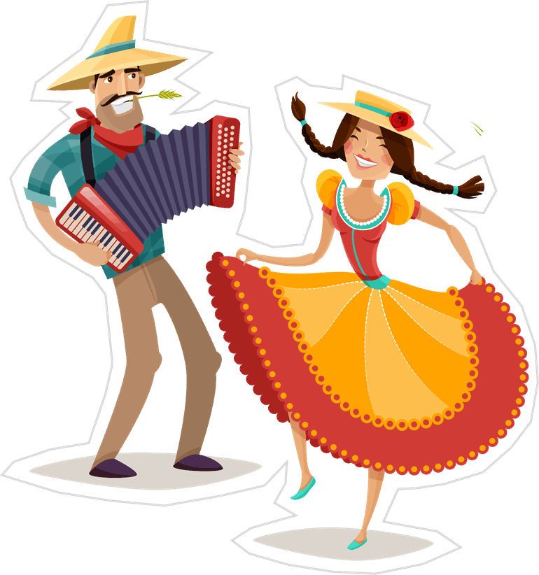
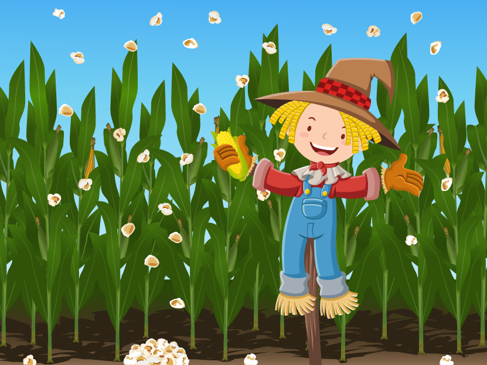

A festa junina vem de origem europeia que era relacionada com o verão,com o tempo foi associada aos santos, como Santo Antônio e São Pedro. Veio para o Brasil no período colonial e foi adicionado elementos da cultura indígena como a dança e o uso da fogueira.
Quadilha: dança feita em grupo, geralmente realizada por par de casais com personagens como "a noiva","o noivo" "o padre" e "o delegado"
Comidas típicas: Feitas principalmente com milho, por ser época de colheita como pamonha,canjica,cural,bolo de milho,pipoca,entre outros.Vestimentos: vestidos coloridos com babados, maquiagem colorida e tranças, para os homens camisas xadrez, bota, chapéu e dente pintado.
Brincadeiras típicas:pescaria,boca do palhaço,corrida do saco,cadeia, entre outros.

A festividade começou no interior do Nordeste,como parte das celebraçoẽs religiosas e com a migração do povo rural para as cidades se espalhou e hoje a festa é muito famosa no Brasil,realizada em escolas e assim compartilhando cultura e revivendo as tradiçoẽs.
É importante para o campo pois assim os costumes e as tradiçoẽs são preservados, fortalecimento da identidade,reconhecimento e celebração da colheita.
